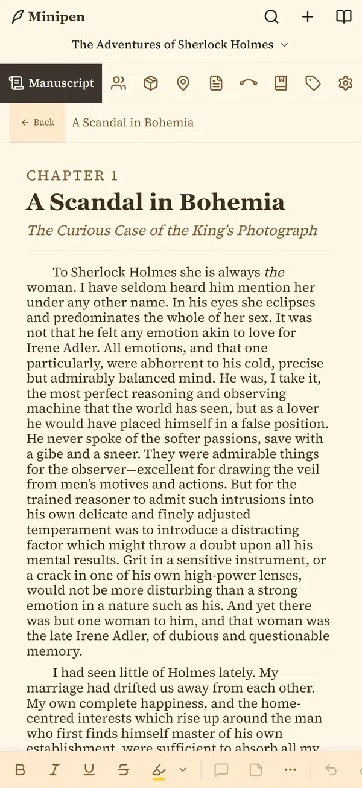
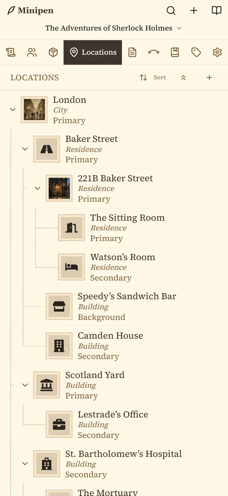

Open beta
Penpoint, in your pocket. Help me test Minipen.
Minipen is the new phone companion to Penpoint. This page takes you from nothing to writing on your phone, one step at a time.
- Step 1On your computerInstall Penpoint Staging and set up Penpoint Cloud.
- Step 2On your phoneInstall Minipen from TestFlight or Google Play.
- Step 3Sign inYour email, a code, and your Cloud password.
- Step 4Tell meWhat broke, what confused you, what you loved.
- A computerWindows or Mac. Linux works too.
- A phoneiPhone on iOS 16.2 or later, or Android 7.0 or later.
- Your emailSign-in codes arrive there.
Stuck on a step? Check the common questions first.
What it is
Your books, on your phone. Synced with your computer.
Read and write your manuscript, check on a character or a place mid-scene, and add notes wherever you are. When you get back to your desk, everything you did on your phone is waiting in Penpoint.


Your computer
Penpoint Staging
Where your books and your account start.
In between
Penpoint Cloud
Keeps both sides in step, encrypted.
Your phone
Minipen
Signs in and brings your books along.
Minipen isn't a standalone app. It needs Penpoint on a computer, and your Penpoint Cloud account can only be created there. So setup starts at your desk.
Before you start
Read this first. It's a beta.
Expect bugs. Minipen and Penpoint Staging are both unfinished, and finding the rough edges is why you're here. Don't do work in the beta that you can't afford to lose, and keep your main manuscript in your regular Penpoint.
Penpoint Staging is a separate test copy of Penpoint. It installs next to your regular Penpoint without replacing it, and it keeps its own library. Your regular books won't be in it until you bring a copy over. It's the only version of Penpoint that can talk to Minipen during the beta.
The beta Cloud is a test Cloud. Your beta account and the cloud copies of your books live on my test servers. They will not carry over when Penpoint Cloud opens to everyone; you would set up a new account then. I may also need to clear the test Cloud during the beta. If I do, the books on your computer stay where they are.
Back up often. Every so often, export a .penpoint copy of the books you're testing with (Step 1B shows how) and keep it somewhere safe, away from your computer.
Moving a book back to your regular Penpoint waits for v1.3.6. Today's Penpoint (v1.3.5) can't open a book that Penpoint Staging has opened. The import looks like it worked, but the book won't open. Once Penpoint v1.3.6 is released, update your regular Penpoint and you can bring beta books back with Import Book….
Step 1
On your computer.
Install Penpoint Staging, bring a book over if you like, and set up Penpoint Cloud.
1A
Download Penpoint Staging
Penpoint Staging is the test version of Penpoint. It's free to use during the beta, and it checks for each new beta version when it starts.
You're on a phone. Penpoint Staging installs on a computer, so open this page there to download it. Send yourself the link:
Then install it
- Run the installer you downloaded (its name starts with
Penpoint.Stagingand ends in.exe). - Follow the prompts. Penpoint Staging opens when it's done, and it has its own icon so you can tell it apart from your regular Penpoint.
Won't open? Check or repair Microsoft WebView2.
- Open the
.dmgfile you downloaded. - Drag Penpoint Staging into your Applications folder.
- Open Penpoint Staging from Applications. Your regular Penpoint stays where it is.
- AppImage (updates itself): make it executable with
chmod +x Penpoint.Staging_*.AppImage, then double-click it. - .deb (Ubuntu, Debian, Mint): double-click the file and let your package manager install it. You update a .deb by hand each beta.
1B
Bring a book over
OptionalWant to test with your own writing? Copy a book from your regular Penpoint into Penpoint Staging. The original stays in your regular Penpoint, untouched. You can also start a brand-new book in Penpoint Staging instead.
In your regular Penpoint
- Go to your book library.
- Right-click the book (on a Mac, Control-click), or click the menu on its cover. Choose Export Book.
- Save the
.penpointfile somewhere easy to find, like your Desktop.
In Penpoint Staging
- In the book library, click the menu at the top right (or right-click an empty spot) and choose Import Book….
- Pick the
.penpointfile and confirm with Import Book.
Use Import Book, not a double-click. Double-clicking a .penpoint file opens it in your regular Penpoint, not in Penpoint Staging.
One way only, for now. Don't import a book from Penpoint Staging into your regular Penpoint until Penpoint v1.3.6 is released. Today's Penpoint can't open it.
1C
Set up Penpoint Cloud
This creates your Penpoint Cloud account. It can only be done here, on your computer. Minipen signs in to it later.
- In Penpoint Staging, open Settings, choose Penpoint Cloud (Beta), and click Set up Penpoint Cloud.
- Enter your email and click Send code. Type in the 6-digit code from your inbox. (Not there after a minute? Check your spam folder.)
- Next you'll see one of two screens:
- "Free through November." Click Start now. No card needed. Skip ahead to step 5.
- "Choose your plan." Pick Penpoint Sync. Minipen needs Sync; Backup doesn't work with the phone app. Monthly or Yearly makes no difference in the beta. Click Continue with Penpoint Sync, then do step 4.
- Only if you chose a plan: a checkout page opens in your web browser. It runs in test mode, so no real money is charged. Pay with this test card:
Card number4242 4242 4242 4242 ExpiryAny date in the future Security codeAny 3 digits Name & addressAnything real-lookingBack in Penpoint Staging, setup carries on by itself once checkout finishes. If it doesn't, click Check now.
- On Create your password, choose a password and save it in a password manager. It encrypts your books, and you'll type it on your phone in Step 3.
- On Save your Recovery Kit, save your 12 words somewhere other than this computer, then click Finish setup.
That's it for the computer. Every book in your Penpoint Staging library now uploads to Penpoint Cloud by itself; there's no switch to flip for each book. The one exception is the demo book. Rename it if you want it on your phone too.
Step 2
Install Minipen on your phone.
Beta builds come through Apple's TestFlight on iPhone and a Google Play testing group on Android. Pick your phone.
iOS 16.2 or later · iPhone only, no iPad
- Install Apple's free TestFlight app from the App Store.
Get TestFlight - On your iPhone, tap the button below. On Apple's page, tap View in TestFlight, then tap Accept.
Join the Minipen beta - Tap Install. Minipen appears on your home screen. New beta builds arrive in TestFlight from then on.
Android 7.0 or later
Use the same Google account your Play Store uses for both links. If you have more than one Google account, check which one is signed in to your browser first.
- Join the Minipen beta group, then tap Join group.
Join the beta group - Opt in to testing, then tap Become a tester. It worked when the page shows a green "You are a tester." under the Minipen logo.
Opt in to testing - Install Minipen from Google Play, where it's listed as Penpoint – Minipen.
Minipen on Google Play
Play says it can't find the app? It can take a few minutes after you opt in before Play shows it. Wait a little, then try the link again.
Stuck, or seeing a message you don't understand? The common questions at the bottom of this page cover the usual ones.
Step 3
Sign in on your phone.
Use the same email you used for Penpoint Cloud on your computer.
- Open Minipen. On the welcome screen, tap the arrow, then tap Sign in to Penpoint Cloud.
- Enter your email and tap Send code.
- Type the 6-digit code from your email and tap Continue.
- Enter your Penpoint Cloud password, the one you created on your computer in Step 1C, and tap Unlock.
- Minipen shows Syncing with Penpoint Cloud while your books download. The first time can take a few minutes. When you see Welcome to Minipen!, tap Go to the Library.
Minipen can't create accounts. If it says your email isn't set up with Penpoint Cloud yet, finish Step 1C on your computer first.
Step 4
Tell me what you find. The good and the broken.
Every report helps, even "this confused me." That's exactly what a beta is for.
Discord
Post it on the Penpoint Discord.
Bugs go in #bug-report. Screenshots help a lot.
Join our DiscordFrom Minipen
Send me the technical details.
In Minipen, open Settings, then About, and under Diagnostics tap Share Logs. Your phone's share menu opens: email the file to me, or attach it to your Discord post. It holds app activity only, never your book's text.
A great bug report says:
- Which phone you have (and iPhone or Android)
- What you tapped, in order
- What you expected, and what happened instead
If something's off
Questions testers ask.
I don't see my book on my phone.
Every book in your Penpoint Staging library goes to your phone by itself, so check these in order:
Is it in Penpoint Staging? Books in your regular Penpoint don't sync. Bring a copy over first.
Is it the demo book? The demo book stays on the computer. Rename it to make it yours, and it will sync like any other book.
Has it finished uploading? Open the book in Penpoint Staging, click the Saved indicator in the toolbar, and choose Sync now. Then close and reopen Minipen.
Same account? Your phone has to be signed in with the same email as your computer.
Minipen says it needs a newer version.
Messages like "Penpoint needs updating to sync", or a book marked "Written in a newer version of Penpoint", mean there's a newer Minipen waiting. On iPhone, open TestFlight and tap Update. On Android, open Google Play and update Minipen there.
Penpoint Staging on your computer checks for new beta versions each time it starts, so keep it up to date too.
Can I sign up or buy anything on my phone?
No. Everything account-related, from creating your account to choosing a plan, happens in Penpoint on your computer. Minipen only signs in to an account you already have.
Minipen says my subscription has ended, but I never had one.
That screen appears whenever the account doesn't have Penpoint Sync yet. Finish Step 1C on your computer, then tap Check again on your phone.
If it says "Mobile needs a Penpoint Cloud Sync subscription", you picked Penpoint Backup. Switch to Penpoint Sync in Settings, Penpoint Cloud (Beta), on your computer.
Does my phone count as one of my devices?
Yes. One account can have 5 devices in total, computers and phones together. Your regular Penpoint doesn't count; only Penpoint Staging and Minipen use the beta Cloud.
If you reach the limit, your phone shows "You've reached your device limit" with a Remove a device button (a computer says "computer limit" instead). Removing a device signs it out; your books in Penpoint Cloud stay safe. Pick one you no longer use, since anything on it that hasn't synced yet won't come along.
What happens if I sign out of Minipen?
The copies of your books on your phone are removed. Your cloud copy and the books on your computer aren't touched. Sign in again and Minipen downloads them fresh.
I forgot my Penpoint Cloud password.
Fix it on your computer. If Penpoint Staging is still signed in there, change the password in its Penpoint Cloud settings. If not, click Use your Recovery Kit on the password screen and enter the 12 words you saved in Step 1C. Then sign in on your phone with the new password.
No one, including me, can reset this password for you, because it's what encrypts your books.
Will my beta account carry over to the real Penpoint Cloud?
No. The beta runs on a separate test Cloud, and nothing moves from it when Penpoint Cloud opens to everyone. Your books on your computer are yours either way, and you can export any of them as a .penpoint file at any time.
Can I use Minipen on my iPad, or on an older Android phone?
Not on iPad for now: the beta is iPhone only, on iOS 16.2 or later. On Android you need 7.0 or later. If an older Android phone shows "Minipen needs a newer WebView", update Android System WebView from the Play Store, then reopen Minipen.
Stuck somewhere?
Ask on Discord, where other testers may already know the answer, or write to me. The Penpoint Cloud guides cover setup in more detail.